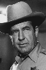

Country:United States, 114 minutes
Spoken languages:English
Genres:Action, Adventure, Drama
Director(s):Tom Laughlin
Writer(s):Tom Laughlin, Delores Taylor
Video Codec:Unknown
Number: 536


Certification:PG
Storyline:
Ex-Green Beret hapkido expert saves wild horses from being slaughtered for dog food and helps protect a desert "freedom school" for runaways.
Cast: 


Medium: Original DVD,
Loaned: No
Aspect ratio: Unknown